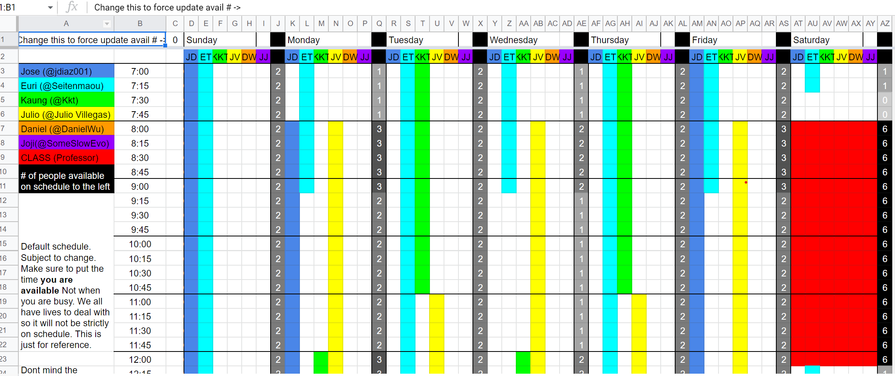
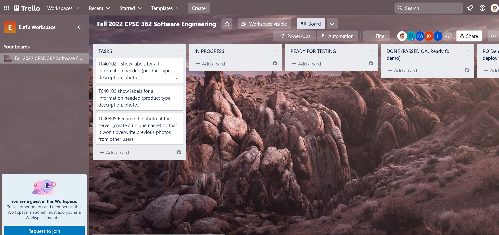
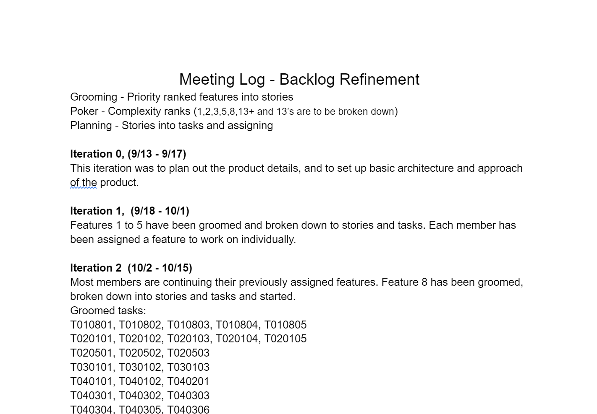
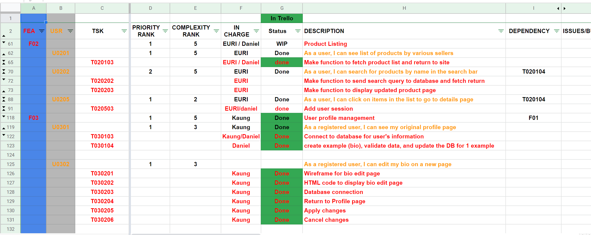

Scrum Project
This project is done by a scrum of 5 people, and each of us are given a
particular role as follow:
1. Product Owner
2. Scrum Master
3. Tech Lead
4. Tech Chaser
5. QA Tester
I decided to take the Tech Lead role.
First, we used excel sheets to check availability for our daily scrum meetings.
Setting up a Trello for visualizing which tasks are done and ready for further processes.
Backlog Refinement: The record of which features are being groomed and revised.
Feature-User-Task record, done with priority ranks and planning poker.
